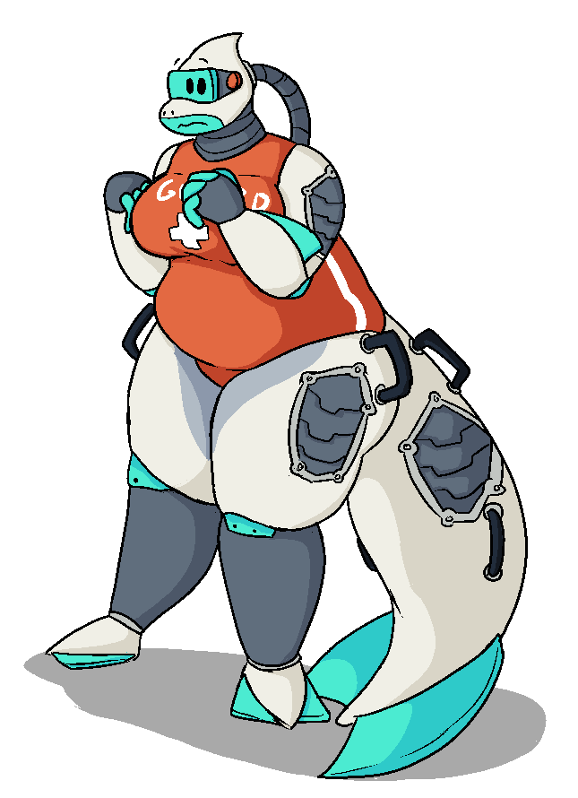

Moby
Moby | |
|---|---|
|  | |
| Serial Number | M0-B61107 |
| Pronouns | She/Her |
| Original Model | SeaSweeper 'Project Mermaid' |
| Age | 7 |
| Height | 216 cm / 7'1" |
| Occupation | Lifeguard/Janitor |
| Relationships |
Ru-B - Partner Cassie - Collaborator & Friend |
| Favorite Flavor of Plastic | Polypropylene |
| Favorite Fast Food | Dougie's Red Hots |
Backstory
Moby (Serial Number M0-B61107) was a part of a fleet of deep-sea robots designed to collect and consume plastic, and filter microplastics through their body. She had a fascination with self-modding, and specifically wanted to modify her body on a cosmetic level to give her a softer, more feminine appearance. Due to the nature of her work, however, this was impossible. Even if it had been, the rest of her fleet and occasional human coworker seemed confused why she wanted to, and the lack of encouragement put her off from the idea.
After a while, Moby noticed she had an overheating issue with her hard drive, which resulted in her being unable to work for as long as she was meant to. Replacing the drive was possible, but due to technical limitations would destroy her memories and, effectively kill her. This was the plan, and - seeking self-preservation - Moby applied for personhood. To her surprise, she was approved, and the fix could no longer proceed without her explicit consent. Her technicians, annoyed, gave her the choice between consenting to the fix, or being 'fired', forced to live on her own. She chose the second option, and was quickly replaced by a newer generation of cleaning bot.
She found work quickly enough at a water park on the mainland, where her aquatic theming helped her fit in thematically. She was brought on as a lifeguard during the day, and janitor at night, the staff reasoning she wouldn't need to sleep being a robot. She was compensated in the form of unlimited access to the parks various facilities, an 'apartment' in an abandoned storage container used as decoration, and a small monthly allowance. Moby, having never actually been paid for her work before, was thrilled.
After saving a bit, she was able to finally perform the mods she'd dreamed of, ending up with a much plusher, feminine-presenting figure. The process was somewhat destructive, though, and would prevent her from ever going below a certain depth in the water again without causing significant structural damage to herself. Nothing the park had came even close to that deep, however, so she was fine.
Soon, however, she began to feel somewhat trapped. The park put her to work near constantly, save for a few hours in the dead of night. She enjoyed the work well enough, but what had meant to be a brief stop while she figured out what she wanted to do with her life quickly became what her life had become. She began to grow somewhat resentful of her actions, trading a life spent doing what she saw as 'good' for the world, largely so she could mod herself in a way she started to see as 'perverted'. At this point, her life felt stuck, and she had no idea where to go next.
Character
Moby is generally upbeat and bubbly, though prone to bouts of self-doubt. She lacks self confidence, and has a habit of relying on external validation as a judgment of her worth. Outside of that, though, she's passionate about her hobbies - a self described nerd - mostly interested in robotics and tailoring. She has a knack for figuring out how robots she's never worked with function, leading to her doing lots of repairs for friends. As for tailoring - she loves finding new outfits to try, but due to her body's nonstandard features (handles, tube on the back of her head, tail, general size) she has to modify everything she gets - though, she's gotten pretty good at it.
She deeply desires being useful, sometimes to her detriment.
Despite her size and conspicuous nature - or, because of it - she tends towards shyness, not liking to be seen if it can be avoided.
Moby is, however, aware of these issues - and, deeply frustrated at her inability to solve them.
Trivia
- Moby is pretty good at billiards.
- Moby's tail is detachable for maintenance and storage, and it's connection point doubles as her charge port.
- Moby's body is designed to take in water and filter microplastics. An experimental 'reactor' in her torso allows her to burn those plastics for energy. Given the fact that Moby rarely has time to stop and charge for the hours her internal battery takes, she's taken to eating plastic as her main form of charging. Through experimenting with the limits of her system, she's even managed to coerce the microbes in her 'stomach' to be able to process most normal foods, unknowingly making her the worlds first robot capable of eating.
- Waste product from this process is incinerated and stored in a small metal tube Moby occasionally removes from her back and dumps into the trash.
- Her diet tends towards fast food - partially because greasy food is easier for her polymer reactor to process, partially because it's what the water park serves. Plus, she can usually eat the plastic containers after.